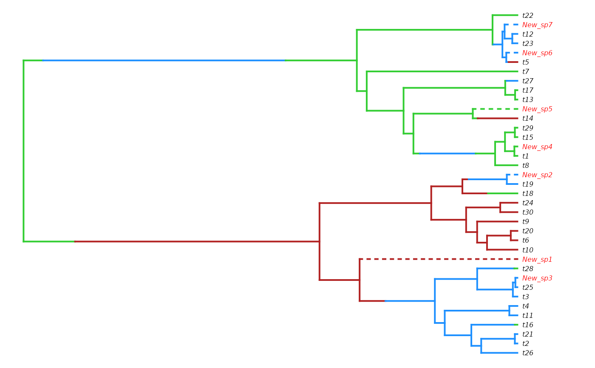

Toy list of missing taxa, with allowed states
Source:R/dataset_doc.R
toy_missing_taxa_list_with_allowed_states.RdSame as phylograftR::toy_missing_taxa_list, with the extra item $allowed_states: the states of
phylograftR::toy_simmap in which each taxon can be grafted. It is used to showcase the attribute-based exclusion
of phylograftR::graft_missing_taxa() (see its examples).
It is the output of phylograftR::import_missing_taxa_list() applied to the table
system.file("extdata", "toy_missing_taxa_with_allowed_states.csv", package = "phylograftR").
Four taxa have a taxon-level value (one or several states) for $allowed_states and three have none (NULL),
so they use the global allowed_states argument of the grafting function.
Such a list requires a simmap to graft: use phylograftR::toy_missing_taxa_list to graft without a simmap instead.
Usage
data(toy_missing_taxa_list_with_allowed_states)Format
A named list with the same 7 taxa and items as phylograftR::toy_missing_taxa_list, and the extra item:
$allowed_statesList (one element per taxon, named after the taxa) of character vectors of states ofphylograftR::toy_simmapin which the taxon can be grafted, orNULLto use the globalallowed_statesargument."New_sp1":"red";"New_sp4":"blue"and"green";"New_sp5":"green";"New_sp7":"blue"and"red"; the others:NULL.
See also
Other datasets and functions from phylograftR:
phylograftR::toy_missing_taxa_listfor the list of missing taxa to graft on the backbone, without allowed states.phylograftR::toy_simmapfor the stochastic character map of colors.phylograftR::import_missing_taxa_list()to import such a list from an external table.phylograftR::build_missing_taxa_list()to build such a list from a data.frame.
Examples
# Import the list
data(toy_missing_taxa_list_with_allowed_states)
toy_missing_taxa_list_with_allowed_states$allowed_states
#> $New_sp1
#> [1] "red"
#>
#> $New_sp2
#> NULL
#>
#> $New_sp3
#> NULL
#>
#> $New_sp4
#> [1] "blue" "green"
#>
#> $New_sp5
#> [1] "green"
#>
#> $New_sp6
#> NULL
#>
#> $New_sp7
#> [1] "blue" "red"
#>
# Compare to the initial '.csv' file
system.file("extdata", "toy_missing_taxa_with_allowed_states.csv", package = "phylograftR")
#> [1] "/home/runner/.cache/R/renv/library/phylograftR-802cedf8/linux-ubuntu-resolute/R-4.6/x86_64-pc-linux-gnu/phylograftR/extdata/toy_missing_taxa_with_allowed_states.csv"
# Graft with the toy simmap
# Taxa with taxon-level states follow their specific constraints.
# Taxa without taxon-level states follow the global argument
# and can only be grafted on "blue" or "green" branches.
data(toy_backbone)
data(toy_simmap)
grafted_phy <- graft_missing_taxa(phy = toy_backbone,
missing_taxa_list = toy_missing_taxa_list_with_allowed_states,
simmap = toy_simmap, allowed_states = c("blue", "green"),
verbose = FALSE, seed = 1234)
# Plot the updated simmap
plot_grafted(grafted_phy, fsize = 0.5, ftype = "i",
simmap_colors = c("blue" = "dodgerblue", "green" = "limegreen", "red" = "firebrick"))

# Inspect final states of each grafted taxon
taxon_names <- toy_missing_taxa_list_with_allowed_states$Taxon_name
tip_edges <- match(match(taxon_names, grafted_phy$tip.label), grafted_phy$edge[, 2])
taxon_states <- setNames(object = vapply(grafted_phy$simmap$maps[tip_edges],
function (x) names(x)[1], character(1)),
nm = taxon_names)
# Should match with the allowed ranges.
# NULL default to "blue" or "green" based on the 'allowed_states' argument.
taxon_states
#> New_sp1 New_sp2 New_sp3 New_sp4 New_sp5 New_sp6 New_sp7
#> "red" "blue" "blue" "green" "green" "blue" "blue"
toy_missing_taxa_list_with_allowed_states$allowed_states
#> $New_sp1
#> [1] "red"
#>
#> $New_sp2
#> NULL
#>
#> $New_sp3
#> NULL
#>
#> $New_sp4
#> [1] "blue" "green"
#>
#> $New_sp5
#> [1] "green"
#>
#> $New_sp6
#> NULL
#>
#> $New_sp7
#> [1] "blue" "red"
#>